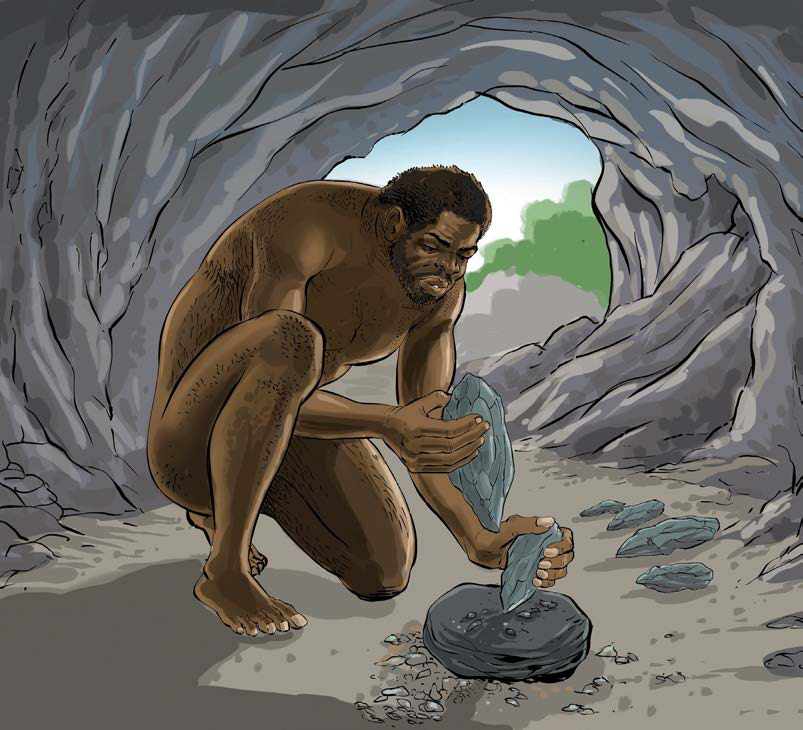

Kielelezo namba 1: Utengenezaji wa zana, Zama za Mawe za Kale
Zana hizi zilimsaidia mwanadamu kuongeza mawindo na chakula zaidi, kwani aliweza kuchimba mizizi mingi zaidi kwa muda mfupi na kuua wanyama wadogo kwa ajili ya kitoweo. Pia, zana hizo zilimsaidia kujihami na wanyama wakali. Vilevile, zilitumika kuchunia ngozi za wanyama na kukata nyama. Aidha, mawe yenye ncha kali yalitumika kukatia mizizi iliyotumika kama chakula na dawa. Pia, yalitumika kutenganisha mizoga ya wanyama ili kuwa rahisi kuibeba. Sayansi na teknolojia za utengenezaji wa zana za mawe zilileta maendeleo makubwa katika maisha ya binadamu kulingana na mahitaji ya jamii ya wakati huo. Kielelezo namba 2, kinawasilisha maumbo ya baadhi ya zana za Zama za Mawe za Kale.